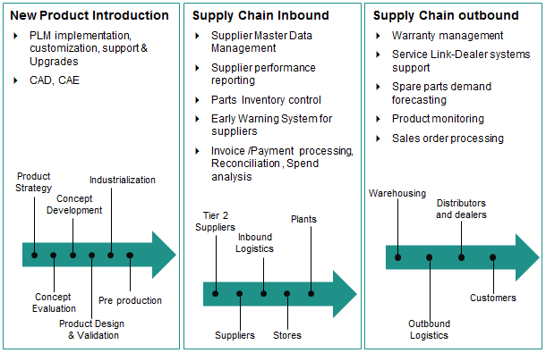

Today’s manufacturers are focused on doing everything leaner and more efficiently, from product design to supply chain to production to sales, marketing and after sales service and support. Syntel’s adaptive and collaborative IT systems and legacy system modernization offerings enable manufacturers to evolve their technology infrastructure to achieve this vision. Syntel leverages decades of domain expertise, world-class technology skills and process knowledge to add value and provide business process improvements.
Our IT services in the manufacturing domain are supported by more than three decades of experience providing value added IT services to leading manufacturing clients in the U.S, Europe and Asia.
Syntel has bundled this wisdom and experience into a framework of solutions fine-tuned to address the unique challenges of manufacturing industry. Our solutions are designed to address the basic industry imperatives according to which all manufacturers operate:
Syntel’s end-to-end manufacturing solutions include Product Lifecycle Management (PLM) and engineering services, IT applications for inbound/outbound supply chain management, production management, service and after sales service and support and other support functions.
